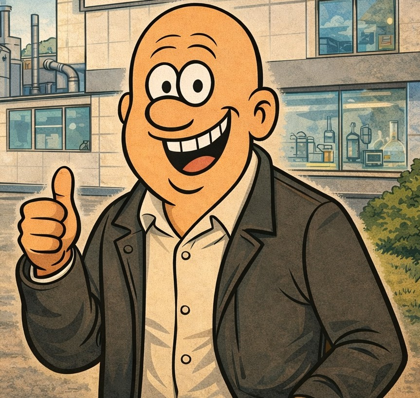

Lillesand
Født og oppvokst i Lillesand. Luftet meg i Bodø, Porsgrunn og Oslo før jeg vendte tilbake til Lillesand i 2001.
Leder • Forretningsutvikling • Sirkulærøkonomi • Teknologi
Over 20 år i operative lederroller, med tyngde innen drift, selskapsbygging, strategi og gjennomføring.

En kort versjon av reisen — fortalt som kapitler.
Født og oppvokst i Lillesand. Luftet meg i Bodø, Porsgrunn og Oslo før jeg vendte tilbake til Lillesand i 2001.
Bakgrunn fra salg, bemanning og kundearbeid — blant annet Adecco, Würth og Destinasjon Sørlandet.
Ledet LiBiR i 16 år med ansvar for strategi, drift, økonomi, organisasjon og tjenesteutvikling.
Bygget Miljøpartner Sør til en sterk regional aktør innen næringsavfall — og videre til salg og fusjon med Lindum Sør.
I Agder Miljø ledet jeg satsing på biokull og økte omsetningen med 50 % på ett år.
"En god leder står bakerst med oversikt — men det viktigste er å gi målgivende pasninger."
Daglig leder med helhetlig ansvar for drift, strategi, økonomi og organisasjon.
Bygget selskapet til en sterk regional aktør før salg og fusjon.
Økte omsetningen med 50 % på ett år i en krevende oppbyggingsfase.
Ledelse handler først og fremst om mennesker.
De beste løsningene kommer ofte fra de som jobber nærmest problemet.
Teknologi er et verktøy — ikke en strategi.
Kultur slår strategi når hverdagen blir krevende.
Ledelse skjer tett på — ikke på avstand.
Hvis du alltid gjør ditt beste, får du ofte folk med deg.
En operativ leder som liker å være tett på organisasjonen, skape retning og få resultater gjennom mennesker.
Med ro, struktur og tydelig kommunikasjon. Først oversikt, så prioritering og gjennomføring.
Lytter, analyserer, bygger relasjoner og etablerer tydelig retning før de største grepene tas.
Praktisk og nysgjerrig. Teknologi brukes til å forbedre drift, beslutninger og arbeidsflyt.
Interessert i en prat om lederroller, strategi eller utvikling?